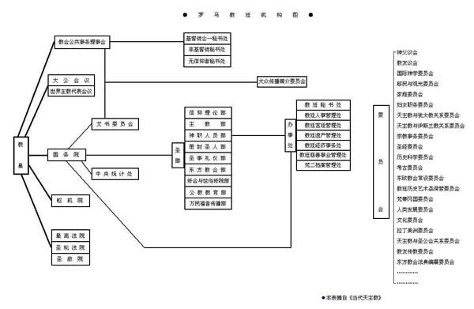

摘自《当代天主教》

●教皇：
教皇按天主教内部的说法，是使徒彼得的继承人。他是全世界罗马天主教徒的首领，代表耶稣基督管理教会，宣传福音。由红衣主教选举产生，终身制。
教皇的完整头衔为：罗马主教、基督在世代表、首席使徒彼得继承人、西部宗主教、罗马教省都主教、梵蒂冈君主、教皇。
现任教皇约翰-保罗二世是罗马天主教会第二百六十六任教皇。
教廷是天主教会的中央行政机构，协助教皇处理整个教会的事务。
根据保罗六世于1967年颁布的《治理教会》宪章规定，教廷中的职位五年一任，期满可连任。各部主席红衣主教，年满75岁可退休，80岁必须退休。
教皇逝世时，各部门负责人自动辞职，等候新教皇重新委任。各部门负责人都由教皇授予决策和执行的权力，但教皇保留最后决策权。
教廷官方语言是拉丁语，但也采纳国际通用语言。
●国务院：
以教廷国务卿为首，负责领导教廷各部门的工作，协助教皇管理全世界教会事务。
国务卿与“教会公共事务理事会”合作，处理外交事务。
国务卿下设两个小组，一组专门负责为教皇准备和撰写文件，另一组保管教皇的印章。
●教会公共事务理事会：
相当于外交部，负责与各国政府建立关系，以及管理教廷驻外使节等事项。
●枢机院：
由枢机主教（亦称红衣主教）组成，原定70名，1976年扩大为137名。1994年，教皇约翰-保罗二世又任命了30名枢机主教，现在共有167名 成员。在各大洲均有代表。枢机院设有院长、副院长、总务和秘书各一名，加上教廷和地方教会中资深的神职人员若干名。由教皇直接领导，协助教会的行政工作，或做教皇的代表和使节，处理教会事务。
●三个法院：
○最高法院―负责监督所有教会的法院，以维护公正的审判。各地教会法院每年向最高法院汇报一次。案件中的有关人士认为法院的判决不当时，可向最高法院上诉。最高法院有权责令教区法庭重新审理，或由最高法院直接审理。如果对教会的行政制度有意见，也可向最高法院上诉。
教廷的最高法院也是梵蒂冈国的最高法院。
○圣轮法院―同最高法院一样，也是一个上诉法院。它负责审理对违反教会法规的行政处罚所进行的上诉，也处理各圣部之间的争端。教徒认为教区法庭的判决不公正时，也可向圣轮法院提出上诉。但该法院通常所处理的都是婚姻纠纷的案件。
教区法庭遇到疑难问题时，可向圣轮法院咨询。
○圣赦院―不是一个公开的法庭。主要处理与良心有关的问题，如给予申请人宽免、恩准等。
●两个会议：
大公会议和世界主教代表会议均由教皇直接领导和主持。前者公元初即已形成，迄今召开了21次；后者1965年成立，每三年召开一次全体会议，并可召开临时特别会议，主要讨论有关天主教的信仰问题。
●九个圣部：
○信仰理论部（信理部）―其前身为著名的宗教裁判所，1967年保罗六世将之改为此名。负责维护信仰与教义，查禁和制裁任何违反信仰原则及教义教规的言论和刊物。
○主教部―负责各地教区的设立。接受并研究各教区的报告。监督各地的主教会议，同时负责监督“拉丁美洲委员会”和“移民与观光委员会”。
○东方教会部―负责处理有关东方教会内的人事和纪律问题，并与“基督徒合一秘书处”和“非基督徒秘书处”一起，谋求改进同东方教会和其它宗教，特别是伊斯兰教的关系。
○圣事礼仪部―负责推行有关圣事的规定，处理东西方教会的礼仪。
○神职人员部（圣职部）―研究和处理各教区的神职人员的培训和生活等问题。
○修会与世俗修院部―这是两个部门，前者负责处理修会团体的成立或解散，监督修会团体的会规、纪律等；后者负责监督不入修会的在俗神职人员团体的规章制度。
○万民福音传播部―原名传信部。专门负责培养和派遣传教士。布置和开展世界各地教会的传教工作，从经济和精神上给予支持。
○册封圣人部―主管册封圣人的过程和手续，以及保管圣人的遗骸、遗物等。
○公教教育部―监督天主教大学和修道院的组织，包括行政、方针、规章等。
●三个秘书处：
○基督徒合一秘书处―1960年成立，负责协调各基督教会之间的关系，推动基督教各派别的统一。
○非基督徒秘书处―开展基督徒与非基督徒间的联系与对话。
○无信仰者秘书处―研究无神论的背景和思想，寻找共同点，与无信仰者进行对话。
●办事处：
○教廷经济会计处。
○教廷遗产管理处。
○教廷宫廷管理处―负责管理教廷的物业。
○教廷秘书处―负责安排教皇接见访客和出外访问事宜。
○中央统计处―负责收集整理有关教会及神职人员工作的资料。
○教廷慈善事业管理处。
○梵蒂冈第二届大公会议档案管理处。
○人事管理处―负责梵蒂冈内的办事处和其他机构的人事问题。
●委员会：
众多的委员会，随着社会的发展或需要，不时有所变更。既有加强充实的，也有变成联络或资料中心的。它们按照各自的性质，隶属于相应的上级机构。
|